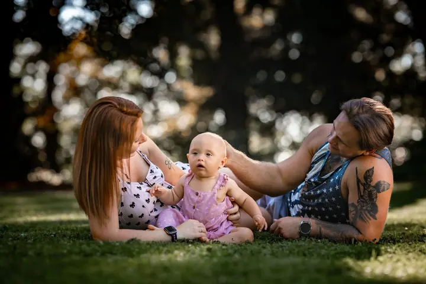

jedna
Svatby
Fotím celý svatební den od příprav nevěsty přes obřad až po večerní oslavu. Myslím i na detaily, jako jsou prstýnky, šaty a dort.

Svatební, rodinná a portrétní fotografka · Nové Město nad Metují

Jmenuji se Pavlína Ducháčová a pod značkou Photografia fotím v Novém Městě nad Metují svatby, rodiny a děti. Nejraději fotím venku v přírodě, v uličkách měst nebo v prostorách starých domů. Své kouzlo má ale i focení v teple domova.
Více o mně
Co fotím
jedna
Fotím celý svatební den od příprav nevěsty přes obřad až po večerní oslavu. Myslím i na detaily, jako jsou prstýnky, šaty a dort.
dvě
Fotíme v přírodě, v uličkách města, v ateliéru nebo u vás doma. Chci, aby na fotkách byly úsměv, zábava a pohoda celé rodiny.
tři
Děti fotím nejraději. Ty naše ratolesti nám vhánějí úsměvy do tváře a zachytit chvíle s nimi je k nezaplacení.
Těhotenství je překrásná etapa, plná čekání na nový život, vzrušení a překvapení. To všechno se dá vepsat do fotografie a navázat na ně prvními snímky miminka.

Pohledy, úsměvy a šimrání motýlků v břiše


Za objektivem
Jsem fotografka z Nového Města nad Metují. Fotím portréty, zamilované páry, těhotenské a newborn focení, děti, rodiny i svatby. Svůj ateliér mám v Sokolské ulici, ale nejvíc mě to táhne ven.
Miluji focení v přírodě, při západu slunce, na poli mezi balíky slámy nebo v zahradě. Nikdy nevíte, co vám daný okamžik nabídne, a právě na tom mi záleží. Fotky z teplého domova mají zase svou nezaměnitelnou atmosféru.
Mám ráda i trochu fantazie. Když máte rádi mýty, báje a pohádky, můžeme se na chvíli stát snílky s dětskou duší. Fotím také produkty, interiéry a exteriéry pro firmy. Mojí srdcovkou jsou ale koníci.
Pavlína
Napište mi přes formulář nebo zavolejte a domluvíme volný termín. Na webu najdete i rezervační systém.
Probereme, co si od focení slibujete, kde budeme fotit a kdy bude to nejhezčí světlo.
Fotíme v přírodě, ve městě, v ateliéru nebo u vás doma. Bez stresu, s úsměvem a s prostorem i pro bláznivé nápady.
Snímky pečlivě vyberu a upravím. Pak vám je předám, ať si je můžete užívat s celou rodinou.
Portfolio
Fotografie jsou ilustrační
Otázky
Svatební focení začíná na 15 900 Kč. Konečná cena záleží na délce a rozsahu dne, ráda vám připravím nabídku na míru.
Rodinné focení je od 2 000 Kč. Podrobnosti vám ráda pošlu podle toho, co si představujete.
Mám ateliér v Sokolské 365 v Novém Městě nad Metují. Moc ráda ale fotím venku v přírodě, v uličkách měst nebo u vás doma.
Stačí vyplnit poptávkový formulář, napsat na pavlina@photografia.cz nebo zavolat na 739 175 699. Ozvu se vám s volnými termíny.